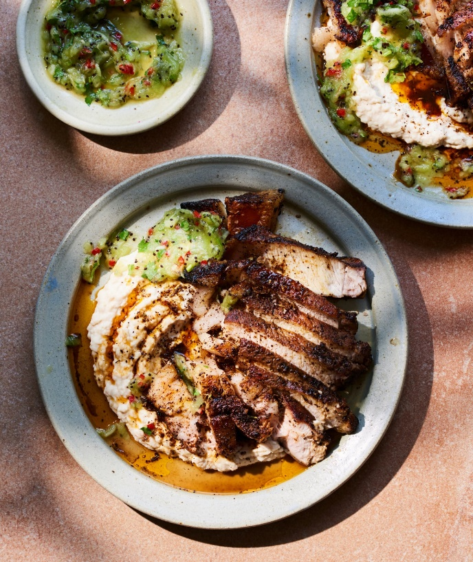

Coffee-marinated pork chops with white bean mash and kiwi salsa

Ask your butcher for thick-cut chops – the bone-in kind with a thick layer of fat on, which crisps up very nicely in the pan. If you would like to get ahead, marinate the chops and make the mash the day before.
For the dry marinade
For the white bean mash
For the kiwi salsa
First, marinate the pork. Put all the marinade ingredients in a spice grinder with a teaspoon of salt and blitz finely. Take a tablespoon of this mix, put in a small bowl with the zest and a teaspoon of flaked salt, crush with your fingers to make a spice salt. Crush the mixture between your fingertips to make the spice salt. Rub the remaining mixture evenly on to the chops. Leave to marinate at room temperature for at least one hour or, if getting ahead, store in the fridge for up to 24 hours. Just make sure to bring to room temperature at least 30 minutes before cooking.
Heat the oven to 200C (180C fan)/390F/gas 6. Add all the mash ingredients to a food processor along with two tablespoons of water and half a teaspoon of salt. Blitz for 30 seconds until almost smooth and transfer to a bowl. Cover and set aside for later.
Sprinkle three quarters of a teaspoon of fine salt over the chops. Put them fat-side down in a large, cold, cast-iron pan with half a teaspoon of oil. Turn the heat to medium-high and cook for two to four minutes, until the fat is rendered and crisp.
Add half a teaspoon of oil, turn the chops on their side and sear on each side for 45 seconds, and repeat once more (if your pan isn’t big enough, put on a tray to one side and sear one by one). Arrange the chops, skin side down and transfer the pan to the oven. Cook for nine minutes, remove from the oven and set aside to rest for five minutes. The chops should be slightly firm and bounce back when pressed in the centre.
For the kiwi salsa, put all the ingredients in a medium-sized bowl and mix well.
Put the chops on to a chopping board and slice along the bone to separate the meat, then cut the meat at an angle into ½cm strips.
Spoon the bean mash on to each plate and arrange the pork slices on top. Sprinkle over the spiced salt generously and serve with the salsa on the side.